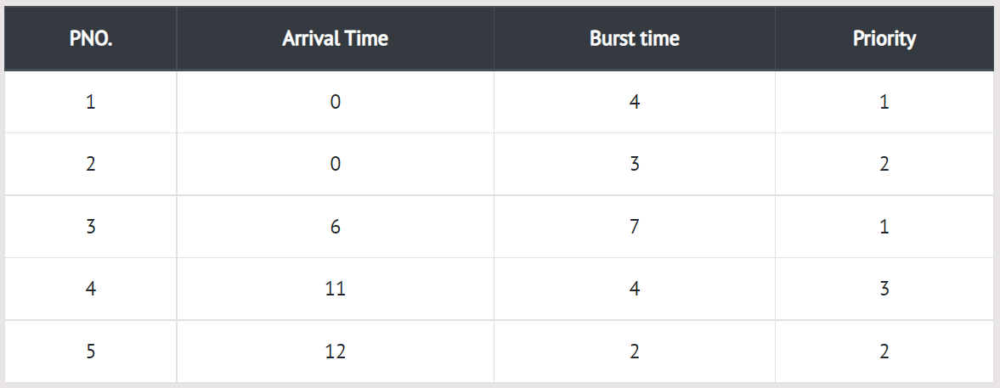

In Preemptive Priority Scheduling, at the time of arrival of a process in the ready queue, its Priority is compared with the priority of the other processes present in the ready queue as well as with the one which is being executed by the CPU at that point of time. The One with the highest priority among all the available processes will be given the CPU next. In the preemptive priority scheduling, the job which is being executed can be stopped at the arrival of a higher priority job.
There are 7 processes P1, P2, P3, P4 and P5 given. Their respective priorities, Arrival Times and Burst times are given in the table below.
Step 0) At time=0, Process P1 and P2 arrive. P1 has higher priority than P2.
The execution begins with process P1, which has burst time 4.
Step 1) At time=1, no new process arrive. Execution continues with P1.
Step 2) At time=2, no new process arrives, so you can continue with P1. P2 is in the waiting queue.
Step 3) At time=3, no new process arrives so you can continue with P1. P2 process still in the waiting queue.
Step 4) At time=4, P1 has finished its execution. P2 starts execution.
Step 5) At time=5, no new process arrives, so we continue with P2.
Step 6) At time=6, P3 arrives. P3 is at higher priority (1) compared to P2 having priority (2).
P2 is preempted, and P3 begins its execution.
Step 7) At time=7, no-new process arrives, so we continue with P3. P2 is in the waiting queue.
Step 8) At time=8, no new process arrives, so we can continue with P3.
Step 9) At time=9, no new process comes so we can continue with P3.
Step 10) At time=10, no new process comes, so we continue with P3
Step 11) At time=11, P4 arrives with priority 4. P3 has higher priority, so it continues its execution.
Step 12) At time=12, P5 arrives. P3 has higher priority, so it continues execution.
Step 12) At time=13, P3 completes execution. We have P2, P4, P5 in ready queue.
P2 and P5 have equal priority. Arrival time of P2 is before P5. So P2 starts execution.
Step 12) At time=14, the P2 process has finished its execution. P4 and P5 are in
the waiting state. P5 has the highest priority and starts execution.
Step 12) At time=15, P5 continues execution.
Step 12) At time=16, P5 is finished with its execution. P4 is the only process left. It starts execution.
Step 12) At time=20, P5 has completed execution and no process is left.
Step 12) Let's calculate the average waiting time for the above example.
The Turnaround time and the waiting time are calculated by using the following formula.
Turn Around Time = Completion Time - Arrival Time Waiting Time = Turnaround time - Burst Time